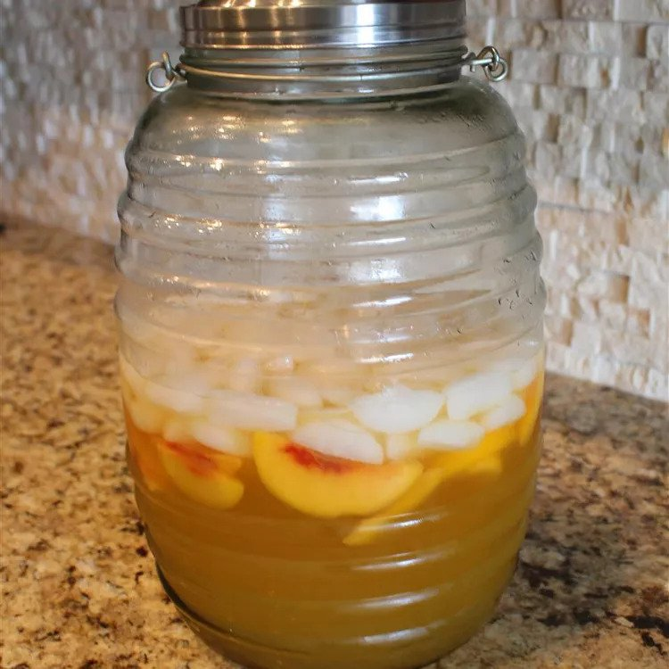

Sparkling Peach Punch

A Nice Drink For The Summer
Ingredients
- 1 (64 fluid ounce) bottle chilled white cranberry-peach juice (such as Ocean Spray® White Cran-Peach)
- 1 liter chilled lemon-lime soda (such as Sprite®)
- 2 (11.5 ounce) cans peach juice, chilled, or to taste
- 2 (10 ounce) packages frozen peach slices
- 1 (12 ounce) package frozen raspberries
Steps
- Mix white cranberry juice, lemon-lime soda, and peach juice together in a punch bowl.
- Float as many peach slices and raspberries in the punch as desired.
- Place remaining fruit back in freezer and add as needed.